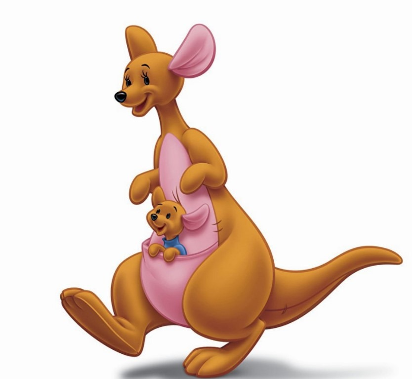

Винни-Пух и все-все-все. Глава седьмая, в которой Кенга и крошка Ру появляются в лесу, а Пятачок принимает ванну
Алан Милн
Никто не знал, откуда они взялись, но вдруг они очутились тут, в Лесу: мама Кенга и крошка Ру.
Пух спросил у Кристофера Робина: "Как они сюда попали?" А Кристофер Робин ответил: "Обычным путем. Понятно, что это значит?" Пух, которому было непонятно, сказал: "Угу". Потом он два раза кивнул головой и сказал: "Обычным путем. Угу. Угу". И отправился к своему другу пятачку узнать, что он об этом думает. У Пятачка был в гостях Кролик. И они принялись обсуждать вопрос втроем.
- Мне вот что не нравится, - сказал Кролик, - вот мы тут живем - ты, Пух, и ты, Поросенок, и я, - и вдруг...
- И еще Иа, - сказал Пух.
- И еще Иа, - и вдруг...
- И еще Сова, - сказал Пух.
- И еще Сова, - и вдруг ни с того ни с сего...
- Да, да, и еще Иа, - сказал Пух, - я про него чуть было не позабыл!
- В о т м ы т у т ж и в е м, - сказал Кролик очень медленно и громко, - все мы, и вдруг ни с того ни с сего мы однажды утром просыпаемся и что мы видим? Мы видим какое-то незнакомое животное! Животное, о котором мы никогда и не слыхали раньше! Животное, которое носит своих детей в кармане' Предположим, что я стал бы носить своих детей с собой в кармане, сколько бы мне понадобилось для этого карманов?
- Шестнадцать, - сказал Пятачок.
- Семнадцать, кажется... Да, да, - сказал Кролик, - и еще один для носового платка, - итого восемнадцать. Восемнадцать карманов в одном костюме! Я бы просто запутался!
Тут все замолчали и стали думать про карманы.
После длинной паузы Пух, который несколько минут ужасно морщил лоб, сказал:
- По-моему, их пятнадцать.
- Чего, чего? - спросил Кролик.
- Пятнадцать.
- Пятнадцать чего?
- Твоих детей.
- А что с ними случилось?
Пух потер нос и сказал, что ему казалось, Кролик говорил о своих детях.
- Разве? - небрежно сказал Кролик.
- Да, ты сказал...
- Ладно, Пух, забудем это, - нетерпеливо перебил его Пятачок. - Вопрос вот в чем: что мы должны сделать с Кенгой?
- А-а, понятно, - сказал Пух.
- Самое лучшее, - сказал Кролик, - будет вот что. Самое лучшее - украсть Крошку Ру и спрятать его, а потом, когда Кенга скажет: "Где же Крошка Ру?" - мы скажем: "АГА!"
- АГА! - сказал Пух, решив поупражняться. - АГА! АГА!
- По-моему, - заметил он немного погодя, - мы можем сказать "АГА", даже если мы не украдем Крошку Ру.
- Пух, - сказал Кролик покровительственным тоном, - действительно у тебя в голове одни опилки!
- Я знаю, - скромно сказал Пух.
- Мы скажем "АГА" так, чтобы Кенга поняла, что мы знаем, где Крошка Ру. Такое "АГА" означает: "Мы тебе скажем, где спрятан Крошка Ру, если ты обещаешь уйти из нашего Леса и никогда не возвращаться". А теперь помолчите - я буду думать!
Пух ушел в уголок и стал учиться говорить такое "АГА". Иногда ему казалось, что у него получается такое "АГА", о каком говорил Кролик, а иногда казалось, что нет.
"Наверно, тут все дело в упражнении, - думал он. - Интересно, понадобится ли Кенге тоже столько упражняться, чтобы нас понять?"
- Я вот что хотел спросить, - сказал Пятачок, немного помявшись, - я говорил с Кристофером Робином, и он мне сказал, что Кенга, вообще говоря, считается Одним из Самых Свирепых Зверей. Я вообще-то не боюсь простых свирепых зверей, но всем известно, что если Один Самый Свирепый Зверь лишится своего детеныша, он становится таким свирепым, как Два Самых Свирепых Зверя. А уж тогда, пожалуй, говорить "АГА" довольно глупо.
- Пятачок, - сказал Кролик, достав карандаш и облизав его кончик, - ты ужасный трусишка.
Пятачок слегка хлюпнул носом.
- Трудно быть храбрым, - сказал он, - когда ты всего лишь Очень Маленькое Существо.
Кролик, который тем временем начал что-то писать, на секунду поднял глаза и сказал:
- Именно потому, что ты Очень Маленькое Существо, ты будешь очень полезен в предстоящем нам приключении.
Пятачок пришел в такой восторг при мысли о том, что он будет полезным, что даже позабыл о своих страхах. А когда Кролик сказал, что Кенги бывают свирепыми только в зимние месяцы, а все остальное время они в добродушном настроении, Пятачок едва мог усидеть на месте - так ему захотелось сразу же стать полезным.
- А как же я? - грустно сказал Пух. - Значит, я не буду полезным?
- Не огорчайся, Пух, - поспешил утешить его великодушный Пятачок. - Может быть, как-нибудь в другой раз...
- Без Винни-Пуха, - торжественно произнес Кролик, начиная чинить карандаш, - все предприятие будет невозможным.
- О-о! - сказал Пятачок, стараясь не показать своего разочарования.
Пух опять скромно удалился в угол. Но про себя он гордо сказал: "Без меня все невозможно! Ай да медведь! "
- Ну, теперь все слушайте! - сказал Кролик, кончив писать:
Пух и Пятачок сели и приготовились слушать - они даже раскрыли рты.
Вот что прочел Кролик:
ПЛАН ПОХИЩЕНИЯ КРОШКИ РУ
1. Во-первых. Кенга бегает быстрее всех нас, даже быстрее меня.
2. Еще во-первых. Кенга никогда-никогда не сводит глаз с Крошки Ру, если он не застегнут у нее в кармашке на все пуговицы.
3. Значит, если мы хотим похитить Крошку Ру, нам надо выиграть время, потому что Кенга бегает быстрее всех нас, даже быстрее меня (см. пункт 1).
4. Идея. Если Ру выскочит из кармашка Кенги, а Пятачок туда вскочит, Кенга не заметит разницы, потому что Пятачок - Очень Маленькое Существо.
5. Как и Крошка Ру.
6. Но Кенга должна обязательно смотреть в другую сторону, чтобы не заметить, как Пятачок вскочит в карман.
7. Смотри пункт 2.
8. Еще одна идея. Вот если Пух будет говорить с ней очень вдохновенно, она может на минутку отвернуться.
9. И тогда я могу убежать с Крошкой Ру.
10. Очень быстро.
11. И Кенга сначала ничего не заметит, а заметит все только потом.
Ну, Кролик с гордостью прочитал все это вслух, и после этого некоторое время никто ничего не говорил.
Наконец Пятачок, который все время то открывал, то закрывал рот, не издавая при этом ни звука, сумел выговорить очень хриплым голосом:
- А потом?
- Что ты хочешь сказать?
- Когда Кенга заметит, что это не Ру?
- Тогда мы все скажем: "АГА".
- Все трое?
- Да.
- Правда?
- Да что тебя беспокоит, Пятачок?
- Ничего, - сказал Пятачок. - Если мы все трое скажем "АГА", тогда все в порядке. Если мы все трое скажем "АГА", - сказал Пятачок, - я не возражаю, но я бы не хотел говорить "АГА" сам, один. А то оно, это "АГА", очень плохо получится... Кстати, - продолжал он, - ты вполне уверен в том, что ты говорил насчет зимних месяцев?
- Насчет зимних месяцев?
- Ну, насчет свирепости только в зимние месяцы.
- А-а. Да, да, все правильно. Ну, Пух, ты понял, что ты должен делать?
- Нет, - сказал Медвежонок Пух. - Не совсем А что я должен делать?
- Ну, все время говорить и говорить с Кенгой, чтобы она ничего не замечала.
- Ох! А о чем?
- О чем хочешь.
- А может быть, почитать ей стихи или что-нибудь в этом роде?
- Вот именно, - сказал Кролик. - Блестяще. А теперь пошли.
И все они отправились искать Кенгу.
Кенга и Ру мирно проводили послеобеденное время у большой ямы с песком. Крошка Ру упражнялся в прыжках в высоту и в длину и даже в глубину - учился падать в мышиные норы и вылезать из них, а Кенга волновалась и поминутно приговаривала: "Ну, дорогой мой, еще один раз прыгни, и домой". И в этот момент на холме появился не кто иной, как Пух.
- Добрый день, Кенга, - сказал он.
- Добрый день, Пух.
- Смотри, как я прыгаю! - пропищал Крошка Ру и упал в очередную мышиную нору.
- Привет, Ру, малыш!
- Мы как раз собираемся домой... - сказала Кенга. - Добрый день, Кролик. Добрый день, Пятачок.
Кролик и Пятачок, которые тем временем показались с другой стороны холма, тоже сказали "добрый день" и "привет, Ру", а Крошка Ру пригласил их посмотреть, как он прыгает...
Они стояли и смотрели. И Кенга смотрела - смотрела во все глаза...
- Послушай, Кенга, - сказал Пух после того, как Кролик подмигнул ему второй раз, - интересно, ты любишь стихи?
- Не особенно, - сказала Кенга.
- А-а, - сказал Пух.
- Ру, дорогой мой, еще один раз прыгни, и нам пора домой!
Наступило недолгое молчание. Крошка Ру свалился в очередную мышиную нору.
- Ну, давай, давай! - громко прошипел Кролик, прикрывая рот лапкой.
- Кстати, о стихах, - продолжал Пух. - Я как раз сочинил небольшой стишок по дороге. Примерно такой. М-м-м... Минуточку...
- Очень интересно, - сказала Кенга. - А теперь, маленький мой Ру...
- Тебе понравится этот стишок, - сказал Кролик.
- Ты его полюбишь, - пропищал Пятачок.
- Только слушай очень-очень внимательно, - сказал Кролик.
- Ничего не пропусти смотри, - пискнул Пятачок.
- Да, да, - сказала Кенга. Но, увы, она не сводила глаз с Крошки Ру.
- Так как там говорится, Пух? - спросил Кролик.
Пух слегка откашлялся и начал:
На днях, не знаю сам зачем,
Зашел я в незнакомый дом,
Мне захотелось Кое с Кем
Потолковать о Том о Сем.
Я рассказал им, Кто, Когда,
И Почему, и Отчего,
Сказал Откуда и Куда,
И Как, и Где, и Для Чего;
Что было Раньше, что Потом,
И Кто Кого, и Что к Чему,
И что подумали о Том,
И Если Нет, То Почему?
Когда мне не хватало слов,
Я добавлял то "Ах", то "Эх",
И "Так сказать", и "Будь здоров",
И "Ну и ну!", и "Просто смех!".
Когда ж закончил я рассказ,
То кое-кто спросил: "И все?
Ты говорил тут целый час,
А рассказал ни то ни се! -
Тогда...
- Очень, очень мило, - сказала Кенга, не ожидая рассказа о том, что произошло тогда. - Ну, самый, самый последний раз прыгни, Ру, дорогой мой, и мы пойдем домой!
Кролик подтолкнул Пуха локтем в бок.
- Кстати, о стихах, - поспешно сказал Пух. - Ты когда-нибудь обращала внимание на вон то дерево, во-он там?
- Где?... - сказала Кенга. - Ну, дорогой малыш...
- Во-он там, впереди, - сказал Пух, показывая за спину Кенги.
- Нет! - сказала Кенга. - Ну, Ру, дорогой мой, прыгай в карман, и пошли домой!
- Нет, ты обязательно посмотри на вон то дерево, во-он там, - сказал Кролик. - Ру, хочешь, я тебя подниму? - И он взял Крошку Ру в лапы.
- А на вон том дереве птичка сидит, - сказал Пух. - А может, это и рыбка.
- Конечно, там птичка сидит, - сказал Кролик, - если только это не рыбка.
- Это не рыбка, это птичка, - пискнул Пятачок.
- Так оно и есть, - сказал Кролик.
- Интересно, это скворушка или дрозд? - сказал Пух.
- В этом весь вопрос, - сказал Кролик. - Дрозд это или скворушка?
И тут наконец Кенга повернулась и посмотрела на вон то дерево.
И в тот момент, когда она отвернулась, Кролик громким голосом сказал:
- Ру, на место!
И на место - в карман Кенги - вскочил Пятачок, а Кролик крепко обхватил Ру и помчался прочь что было духу.
- Куда это Кролик девался?... - спросила Кенга, снова повернув голову. - Ну как, дорогой малыш, все в порядке?
Пятачок со дна кармана Кенги что-то пискнул - точь-в-точь как Ру.
- Кролику пришлось уйти, - сказал Пух, - он, наверно, вспомнил о каком-то важном деле. Вдруг.
- А Пятачок?
- Наверно, Пятачок тоже о чем-нибудь вспомнил. Вдруг.
- Ну ладно, мы пошли домой, - сказала Кенга. - Всего доброго, Пух!
Три огромных скачка - и она исчезла из виду.
Пух посмотрел ей вслед.
"Хотел бы я так прыгать! - подумал он. - Почему это одни умеют, а другие нет? Очень, очень обидно!"
Кенга, спору нет, отлично умела прыгать, но Пятачку минутами, по правде говоря, хотелось, чтобы Кенга не умела. Бывало, возвращаясь домой из дальней прогулки по Лесу, Пятачок мечтал стать птичкой и уметь летать, но теперь, когда он болтался на дне кармана Кенги, в голове у него прыгали такие мысли:
называется это
это летать, на не
то никогда соглашусь! "
"Если я
- Ууууууу! - говорил он, взмывая в воздух, а спускаясь вниз, он говорил: - Ух!
И ему пришлось повторять "Уууууууу - ух!", "Уууууууу - ух!", "Ууууууу - ух!" всю дорогу - до самого дома Кенги.
Конечно, дома, как только Кенга расстегнула свой карман, она заметила, что произошло. В первую секунду она чуть было не испугалась, но сразу поняла, что пугаться нечего - ведь она была вполне уверена, что Кристофер Робин никому не позволит обидеть Крошку Ру.
"Хорошо, - сказала она про себя, - раз они решили разыграть меня, я их сама разыграю".
- Ну, Ру, дорогой мой, - сказала она, вытащив поросенка из кармана, - пора укладываться спать.
- Ага! - сказал Пятачок, стараясь произнести это слово как можно лучше. Но, увы, после такого ужасного путешествия "ага" получилось не очень хорошее, и Кенга, по-видимому, не поняла, что оно означает.
- Сперва купаться, - весело сказала Кенга.
- Ага! - повторил Пятачок, тревожно оглядываясь в поисках остальных.
Но остальных не было. Кролик сидел дома и играл с Крошкой Ру, чувствуя, что с каждой минутой все больше и больше его любит, а Пух, который решил попробовать стать Кенгой, все еще учился прыгать в той же ямке с песком.
- Не знаю, - сказала Кенга очень задумчивым голосом, - может быть, тебе лучше сегодня принять холодную ванну? Как ты думаешь, Ру, милый?
Пятачок, который никогда особенно не любил купаться, задрожал от возмущения и сказал самым мужественным голосом, каким только мог:
- Кенга! Я вижу, что пришло время поговорить начистоту.
- До чего же ты смешной глупыш, Ру, - сказала Кенга, наливая воду в ванну.
- Я не Ру, - громко сказал Пятачок. - Я Пятачок!
- Да, милый, да, - сказала Кенга ласково. - Никто с тобой не спорит! И голосу Пятачка подражает, какой умница! - пробормотала она, доставая с полки большой кусок желтого мыла. - Ну, что ты у меня еще придумаешь?
- Ты что, не видишь? - закричал Пятачок. - Глаз у тебя, что ли, нет? Погляди на меня!
- Я-то гляжу, маленький мой Ру, - сказала Кенга довольно строго. - А вот ты помнишь, что я тебе вчера говорила про гримасы? Если ты будешь строить такие гримасы, как Пятачок, то, когда вырастешь, станешь похож на Пятачка, и ты тогда об этом очень-очень пожалеешь. А теперь - марш в ванну и не заставляй меня повторять это еще раз!
И, не успев опомниться, Пятачок оказался в ванне, и Кенга принялась изо всех сил тереть его большой лохматой мочалкой.
- Ой! - пищал Пятачок. - Отпусти меня! Я же Пятачок!
- Не открывай рот, дорогой, а то в него попадет мыло, - сказала Кенга. - Ну вот! Что я тебе говорила?
- Ты-ты-ты, ты это нарочно сделала, - булькнул было Пятачок, как только смог снова заговорить...
Но тут во рту у него оказалась мочалка.
- Вот так хорошо, милый, помалкивай, - сказала Кенга.
В следующее мгновение Пятачок был извлечен из ванны и крепко-накрепко вытерт мохнатым полотенцем.
- Ну, - сказала Кенга, - а теперь прими лекарство - и в постель.
- К-к-какое ле-ле-карство? - пролепетал Пятачок.
- Рыбий жир, чтобы ты вырос большим и сильным, милый. Ты же не хочешь быть таким маленьким и слабеньким, как Пятачок, правда? Ну, так вот.
В этот момент кто-то постучал в дверь.
- Войдите, - сказала Кенга.
И вошел Кристофер Робин.
- Кристофер Робин, Кристофер Робин! - рыдал Пятачок. - Скажи Кенге, кто я. Она все время говорит, что я Ру! А я ведь не Ру правда?
Кристофер Робин осмотрел его очень тщательно и покачал головой.
- Конечно, ты не Ру, - сказал он, - потому что я только что видел Ру в гостях у Кролика. Они там играют.
- Ну и ну! - сказала Кенга. - Подумать только! Как это я могла так обознаться!
- Ага, ага! Вот видишь! - сказал Пятачок. - Что я тебе говорил? Я Пятачок!
Кристофер Робин снова покачал головой.
- Нет, ты не Пятачок, - сказал он. - Я хорошо знаю Пятачка, и он совершенно другого цвета.
"Это потому, что я только сию минуту принял ванну", - хотел сказать Пятачок, но успел сообразить, что, пожалуй, говорить этого не стоит. Едва он открыл рот, собираясь сказать что-то совсем другое, Кенга живо всунула ему в рот ложку с лекарством и похлопала его по спине и сказала ему, что рыбий жир очень, очень вкусный, когда к нему как следует привыкнешь.
- Я знала, что это не Пятачок, - сказала Кенга потом. - Интересно, кто это все же может быть?
- Может быть, какой-нибудь родственник Пуха? - сказал Кристофер Робин. - Скажем, племянник, или дядя, или что-нибудь в этом духе?
- Вероятно, вероятно, - согласилась Кенга. - Только нам надо придумать ему какое-нибудь имя.
- Можно звать его Пушель, - сказал Кристофер Робин. - Например, Генри Пушель. Сокращенно.
Но, едва получив новое имя, Генри Пушель вывернулся из объятий Кенги и прыгнул вниз. К его великому счастью, Кристофер Робин оставил дверь открытой.
Никогда в жизни Генри Пушель-Пятачок не бегал так быстро, как сейчас! Он несся, не останавливаясь ни на секунду. Лишь в сотне шагов от дома он прекратил бег и покатился по земле, чтобы вновь обрести свой собственный - милый, уютный и привычный - цвет...
Так Кенга и Крошка Ру остались в Лесу. И каждый вторник Крошка Ру отправлялся на целый день в гости к своему новому другу - Кролику, а Кенга проводила весь день со своим новым другом - Пухом, обучая его прыгать, а Пятачок в эти дни гостил у своего старого друга Кристофера Робина.
И всем было ужасно весело!
Продолжение следует